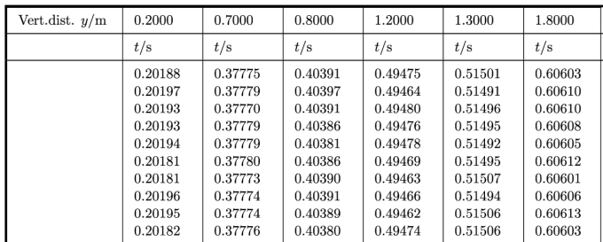
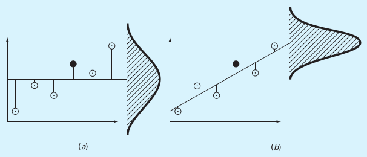

Least Squares Method & Error Estimations
Contents
Least Squares Method & Error Estimations¶
FIZ228 - Numerical Analysis
Dr. Emre S. Tasci, Hacettepe University
Note
This lecture is heavily benefited from Steven Chapra’s Applied Numerical Methods with MATLAB: for Engineers & Scientists.
Data & Import¶
The free-fall data we will be using is taken from: D. Horvat & R. Jecmenica, “The Free Fall Experiment” Resonance 21 259-275 (2016) [https://doi.org/10.1007/s12045-016-0321-9].

Here’s the content of our data file:
Vert.dist. y/m,0.2,0.7,0.8,1.2,1.3,1.8
,t/s,t/s,t/s,t/s,t/s,t/s
1,0.20188,0.37775,0.40391,0.49475,0.51501,0.60603
2,0.20197,0.37779,0.40397,0.49464,0.51491,0.60610
3,0.20193,0.37770,0.40391,0.49480,0.51496,0.60610
4,0.20193,0.37779,0.40386,0.49476,0.51495,0.60608
5,0.20194,0.37779,0.40381,0.49478,0.51492,0.60605
6,0.20181,0.37780,0.40386,0.49469,0.51495,0.60612
7,0.20181,0.37773,0.40390,0.49463,0.51507,0.60601
8,0.20196,0.37774,0.40391,0.49466,0.51494,0.60606
9,0.20195,0.37774,0.40389,0.49462,0.51506,0.60613
10,0.20182,0.37776,0.40380,0.49474,0.51506,0.60603
<t>/s,0.20190,0.37776,0.40388,0.49471,0.51498,0.60607
import pandas as pd
data1 = pd.read_csv("data/03_FreeFallData.csv")
data1.columns
data1
| Vert.dist. y/m | 0.2 | 0.7 | 0.8 | 1.2 | 1.3 | 1.8 | |
|---|---|---|---|---|---|---|---|
| 0 | NaN | t/s | t/s | t/s | t/s | t/s | t/s |
| 1 | 1 | 0.20188 | 0.37775 | 0.40391 | 0.49475 | 0.51501 | 0.60603 |
| 2 | 2 | 0.20197 | 0.37779 | 0.40397 | 0.49464 | 0.51491 | 0.60610 |
| 3 | 3 | 0.20193 | 0.37770 | 0.40391 | 0.49480 | 0.51496 | 0.60610 |
| 4 | 4 | 0.20193 | 0.37779 | 0.40386 | 0.49476 | 0.51495 | 0.60608 |
| 5 | 5 | 0.20194 | 0.37779 | 0.40381 | 0.49478 | 0.51492 | 0.60605 |
| 6 | 6 | 0.20181 | 0.37780 | 0.40386 | 0.49469 | 0.51495 | 0.60612 |
| 7 | 7 | 0.20181 | 0.37773 | 0.40390 | 0.49463 | 0.51507 | 0.60601 |
| 8 | 8 | 0.20196 | 0.37774 | 0.40391 | 0.49466 | 0.51494 | 0.60606 |
| 9 | 9 | 0.20195 | 0.37774 | 0.40389 | 0.49462 | 0.51506 | 0.60613 |
| 10 | 10 | 0.20182 | 0.37776 | 0.40380 | 0.49474 | 0.51506 | 0.60603 |
| 11 | <t>/s | 0.20190 | 0.37776 | 0.40388 | 0.49471 | 0.51498 | 0.60607 |
We don’t need the first row and first column, so let’s remove them via pandas.DataFrame.drop:
data1.drop(0, inplace=True)
data1.drop(11, inplace=True)
data1.drop(['Vert.dist. y/m'],axis=1, inplace=True)
data1
| 0.2 | 0.7 | 0.8 | 1.2 | 1.3 | 1.8 | |
|---|---|---|---|---|---|---|
| 1 | 0.20188 | 0.37775 | 0.40391 | 0.49475 | 0.51501 | 0.60603 |
| 2 | 0.20197 | 0.37779 | 0.40397 | 0.49464 | 0.51491 | 0.60610 |
| 3 | 0.20193 | 0.37770 | 0.40391 | 0.49480 | 0.51496 | 0.60610 |
| 4 | 0.20193 | 0.37779 | 0.40386 | 0.49476 | 0.51495 | 0.60608 |
| 5 | 0.20194 | 0.37779 | 0.40381 | 0.49478 | 0.51492 | 0.60605 |
| 6 | 0.20181 | 0.37780 | 0.40386 | 0.49469 | 0.51495 | 0.60612 |
| 7 | 0.20181 | 0.37773 | 0.40390 | 0.49463 | 0.51507 | 0.60601 |
| 8 | 0.20196 | 0.37774 | 0.40391 | 0.49466 | 0.51494 | 0.60606 |
| 9 | 0.20195 | 0.37774 | 0.40389 | 0.49462 | 0.51506 | 0.60613 |
| 10 | 0.20182 | 0.37776 | 0.40380 | 0.49474 | 0.51506 | 0.60603 |
Be careful that the data have been imported as string (due to the first row initially being formed of strings 8P ):
data1.loc[2,"0.7"]
'0.37779'
type(data1.loc[2,"0.7"])
str
data1.dtypes
0.2 object
0.7 object
0.8 object
1.2 object
1.3 object
1.8 object
dtype: object
So, let’s set them all to float:
data1 = data1.astype('float')
data1.dtypes
0.2 float64
0.7 float64
0.8 float64
1.2 float64
1.3 float64
1.8 float64
dtype: object
data1
| 0.2 | 0.7 | 0.8 | 1.2 | 1.3 | 1.8 | |
|---|---|---|---|---|---|---|
| 1 | 0.20188 | 0.37775 | 0.40391 | 0.49475 | 0.51501 | 0.60603 |
| 2 | 0.20197 | 0.37779 | 0.40397 | 0.49464 | 0.51491 | 0.60610 |
| 3 | 0.20193 | 0.37770 | 0.40391 | 0.49480 | 0.51496 | 0.60610 |
| 4 | 0.20193 | 0.37779 | 0.40386 | 0.49476 | 0.51495 | 0.60608 |
| 5 | 0.20194 | 0.37779 | 0.40381 | 0.49478 | 0.51492 | 0.60605 |
| 6 | 0.20181 | 0.37780 | 0.40386 | 0.49469 | 0.51495 | 0.60612 |
| 7 | 0.20181 | 0.37773 | 0.40390 | 0.49463 | 0.51507 | 0.60601 |
| 8 | 0.20196 | 0.37774 | 0.40391 | 0.49466 | 0.51494 | 0.60606 |
| 9 | 0.20195 | 0.37774 | 0.40389 | 0.49462 | 0.51506 | 0.60613 |
| 10 | 0.20182 | 0.37776 | 0.40380 | 0.49474 | 0.51506 | 0.60603 |
While we’re at it, let’s do a couple of make-overs:
data1.reset_index(inplace=True,drop=True)
data1
| 0.2 | 0.7 | 0.8 | 1.2 | 1.3 | 1.8 | |
|---|---|---|---|---|---|---|
| 0 | 0.20188 | 0.37775 | 0.40391 | 0.49475 | 0.51501 | 0.60603 |
| 1 | 0.20197 | 0.37779 | 0.40397 | 0.49464 | 0.51491 | 0.60610 |
| 2 | 0.20193 | 0.37770 | 0.40391 | 0.49480 | 0.51496 | 0.60610 |
| 3 | 0.20193 | 0.37779 | 0.40386 | 0.49476 | 0.51495 | 0.60608 |
| 4 | 0.20194 | 0.37779 | 0.40381 | 0.49478 | 0.51492 | 0.60605 |
| 5 | 0.20181 | 0.37780 | 0.40386 | 0.49469 | 0.51495 | 0.60612 |
| 6 | 0.20181 | 0.37773 | 0.40390 | 0.49463 | 0.51507 | 0.60601 |
| 7 | 0.20196 | 0.37774 | 0.40391 | 0.49466 | 0.51494 | 0.60606 |
| 8 | 0.20195 | 0.37774 | 0.40389 | 0.49462 | 0.51506 | 0.60613 |
| 9 | 0.20182 | 0.37776 | 0.40380 | 0.49474 | 0.51506 | 0.60603 |
Plotting¶
import seaborn as sns
sns.set_theme() # To make things appear "more beautiful" 8)
data2 = data1.copy()
data2
| 0.2 | 0.7 | 0.8 | 1.2 | 1.3 | 1.8 | |
|---|---|---|---|---|---|---|
| 0 | 0.20188 | 0.37775 | 0.40391 | 0.49475 | 0.51501 | 0.60603 |
| 1 | 0.20197 | 0.37779 | 0.40397 | 0.49464 | 0.51491 | 0.60610 |
| 2 | 0.20193 | 0.37770 | 0.40391 | 0.49480 | 0.51496 | 0.60610 |
| 3 | 0.20193 | 0.37779 | 0.40386 | 0.49476 | 0.51495 | 0.60608 |
| 4 | 0.20194 | 0.37779 | 0.40381 | 0.49478 | 0.51492 | 0.60605 |
| 5 | 0.20181 | 0.37780 | 0.40386 | 0.49469 | 0.51495 | 0.60612 |
| 6 | 0.20181 | 0.37773 | 0.40390 | 0.49463 | 0.51507 | 0.60601 |
| 7 | 0.20196 | 0.37774 | 0.40391 | 0.49466 | 0.51494 | 0.60606 |
| 8 | 0.20195 | 0.37774 | 0.40389 | 0.49462 | 0.51506 | 0.60613 |
| 9 | 0.20182 | 0.37776 | 0.40380 | 0.49474 | 0.51506 | 0.60603 |
plt1 = sns.relplot(data=data2,kind="line",marker="o")
k =plt1.set(xticks=data2.index)
data2.mean()
0.2 0.201900
0.7 0.377759
0.8 0.403882
1.2 0.494707
1.3 0.514983
1.8 0.606071
dtype: float64
data_stats = pd.DataFrame(data2.mean())
data_stats.rename(columns={0:'dmean'}, inplace=True )
data_stats['dvar'] = data2.var()
data_stats['dstd'] = data2.std()
data_stats
| dmean | dvar | dstd | |
|---|---|---|---|
| 0.2 | 0.201900 | 4.155556e-09 | 0.000064 |
| 0.7 | 0.377759 | 1.076667e-09 | 0.000033 |
| 0.8 | 0.403882 | 2.595556e-09 | 0.000051 |
| 1.2 | 0.494707 | 4.467778e-09 | 0.000067 |
| 1.3 | 0.514983 | 3.778889e-09 | 0.000061 |
| 1.8 | 0.606071 | 1.698889e-09 | 0.000041 |
data_stats.dstd # Unbiased
0.2 0.000064
0.7 0.000033
0.8 0.000051
1.2 0.000067
1.3 0.000061
1.8 0.000041
Name: dstd, dtype: float64
or
import numpy as np
N = data2.shape[0]
for coll in list(data2.columns):
s_dev = 0
s_mean = data2.loc[:,coll].mean()
#print(s_mean)
for x_i in data2.loc[:,coll]:
# print (x_i)
s_dev += (x_i - s_mean)**2
s_dev = np.sqrt(s_dev/(N))
print("{:s}: {:.6f}".format(coll,s_dev))
0.2: 0.000061
0.7: 0.000031
0.8: 0.000048
1.2: 0.000063
1.3: 0.000058
1.8: 0.000039
data2.std(ddof=0) # Biased
0.2 0.000061
0.7 0.000031
0.8 0.000048
1.2 0.000063
1.3 0.000058
1.8 0.000039
dtype: float64
Average over all the sample deviations should be equal to the deviation of the population!
For more information on this Bessel’s Correction, check: http://mathcenter.oxford.emory.edu/site/math117/besselCorrection/
Types of Errors¶
True error (\(E_t\))¶
Absolute error (\(\left|E_t\right|\))¶
True fractional relative error¶
True percent relative error (\(\varepsilon_t\))¶
But what if we don’t know the true value?..
Approximate percent relative error (\(\varepsilon_a\))¶
Computations are repeated until \(\left|\varepsilon_a\right| < \left|\varepsilon_s\right|\) (\(\varepsilon_s\) is the satisfactory precision criterion).
The result is correct to at least \(n\) significant figures given that:
Example:¶
To estimate \(e^{0.5}\) so that the absolute value of the approximate error estimate falls below an error criterion conforming to 3 significant figures, how many terms do you need to include?
Solution:
\(\varepsilon_s=(0.5\times 10^{2-3})\,\%\)
eps_s = 0.5*10**(2-3)
print("{:.2f}%".format(eps_s))
0.05%
eps_s = 0.5*10**(2-3)
x = 0.5
eps_a = 1000
e_prev = 0
no_of_terms = 0
print("{:>3} {:^13}\t{:^10}".format("#","e","E_a"))
while(eps_a > eps_s):
e_calculated = e_prev + x**no_of_terms/np.math.factorial(no_of_terms)
eps_a = np.abs(((e_calculated - e_prev)/e_calculated))*100
print("{:3d}:{:10.6f}\t{:16.5f}".format(no_of_terms+1,e_calculated,eps_a))
e_prev = e_calculated
no_of_terms += 1
# e E_a
1: 1.000000 100.00000
2: 1.500000 33.33333
3: 1.625000 7.69231
4: 1.645833 1.26582
5: 1.648438 0.15798
6: 1.648698 0.01580
eps_s = 0.5*10**(2-3)
e_sqrt_real = np.sqrt(np.e)
x = 0.5
eps_a = 1000
e_sqrt_prev = 0
no_of_terms = 0
print("{:>3} {:^13}{:^20}{:^12}".format("#","e_calc","E_a","E_t"))
while(eps_a > eps_s):
e_sqrt_calculated = e_sqrt_prev + x**no_of_terms/np.math.factorial(no_of_terms)
eps_a = np.abs(((e_sqrt_calculated - e_sqrt_prev)/e_sqrt_calculated))*100
eps_t = np.abs((e_sqrt_real - e_sqrt_calculated)/e_sqrt_real)*100
print("{:3d}:{:10.6f}{:16.5f}{:16.5f}".format(no_of_terms+1,e_sqrt_calculated,eps_a,eps_t))
e_sqrt_prev = e_sqrt_calculated
no_of_terms += 1
# e_calc E_a E_t
1: 1.000000 100.00000 39.34693
2: 1.500000 33.33333 9.02040
3: 1.625000 7.69231 1.43877
4: 1.645833 1.26582 0.17516
5: 1.648438 0.15798 0.01721
6: 1.648698 0.01580 0.00142
How good is a mean?¶
Once again, consider our free fall data:
data2
| 0.2 | 0.7 | 0.8 | 1.2 | 1.3 | 1.8 | |
|---|---|---|---|---|---|---|
| 0 | 0.20188 | 0.37775 | 0.40391 | 0.49475 | 0.51501 | 0.60603 |
| 1 | 0.20197 | 0.37779 | 0.40397 | 0.49464 | 0.51491 | 0.60610 |
| 2 | 0.20193 | 0.37770 | 0.40391 | 0.49480 | 0.51496 | 0.60610 |
| 3 | 0.20193 | 0.37779 | 0.40386 | 0.49476 | 0.51495 | 0.60608 |
| 4 | 0.20194 | 0.37779 | 0.40381 | 0.49478 | 0.51492 | 0.60605 |
| 5 | 0.20181 | 0.37780 | 0.40386 | 0.49469 | 0.51495 | 0.60612 |
| 6 | 0.20181 | 0.37773 | 0.40390 | 0.49463 | 0.51507 | 0.60601 |
| 7 | 0.20196 | 0.37774 | 0.40391 | 0.49466 | 0.51494 | 0.60606 |
| 8 | 0.20195 | 0.37774 | 0.40389 | 0.49462 | 0.51506 | 0.60613 |
| 9 | 0.20182 | 0.37776 | 0.40380 | 0.49474 | 0.51506 | 0.60603 |
data_stats
| dmean | dvar | dstd | |
|---|---|---|---|
| 0.2 | 0.201900 | 4.155556e-09 | 0.000064 |
| 0.7 | 0.377759 | 1.076667e-09 | 0.000033 |
| 0.8 | 0.403882 | 2.595556e-09 | 0.000051 |
| 1.2 | 0.494707 | 4.467778e-09 | 0.000067 |
| 1.3 | 0.514983 | 3.778889e-09 | 0.000061 |
| 1.8 | 0.606071 | 1.698889e-09 | 0.000041 |
scipy.optimize.minimize to the rescue!¶
data2['0.2'].shape
(10,)
from scipy.optimize import minimize
def fun_err(m,x):
err = 0
for x_i in x:
err += (x_i - m)**2
err = np.sqrt(err/x.shape[0])
return err
fun_err(data2['0.2'].mean(),data2['0.2'])
6.11555394056866e-05
fun_err(data2['0.2'].mean()+1,data2['0.2'])
1.00000000187
minimize(fun_err,data2['0.2'].mean(),args=(data2['0.2']),tol=1E-3)
fun: 6.11555394056866e-05
hess_inv: array([[1]])
jac: array([0.00012183])
message: 'Optimization terminated successfully.'
nfev: 2
nit: 0
njev: 1
status: 0
success: True
x: array([0.2019])
data2['0.2'].mean()
0.20190000000000002
list(data2.columns)
['0.2', '0.7', '0.8', '1.2', '1.3', '1.8']
data_stats.loc['0.2','dmean']
0.20190000000000002
print("{:^5}: {:^8} ({:^8})".format("col","min","mean"))
for col in list(data2.columns):
res_min = minimize(fun_err,1,args=(data2[col]))
print("{:^5}: {:8.6f} ({:8.6f})".format(col,float(res_min.x),data_stats.loc[col,'dmean']))
col : min ( mean )
0.2 : 0.201900 (0.201900)
0.7 : 0.377759 (0.377759)
0.8 : 0.403882 (0.403882)
1.2 : 0.494707 (0.494707)
1.3 : 0.514983 (0.514983)
1.8 : 0.606071 (0.606071)
Couldn’t the cost function be better?¶
def fun_err2(m,x):
err = 0
for x_i in x:
err += (x_i - m)**2
#err = np.sqrt(err/x.shape[0])
return err
fun_err2(data2['0.2'].mean(),data2['0.2'])
3.740000000000487e-08
minimize(fun_err2,data2['0.2'].mean(),args=(data2['0.2']))
fun: 3.740000000000487e-08
hess_inv: array([[1]])
jac: array([1.49011612e-07])
message: 'Optimization terminated successfully.'
nfev: 2
nit: 0
njev: 1
status: 0
success: True
x: array([0.2019])
print("{:^5}: {:^8} ({:^8})".format("col","min","mean"))
for col in list(data2.columns):
res_min = minimize(fun_err2,1,args=(data2[col]))
print("{:^5}: {:8.6f} ({:8.6f})".format(col,float(res_min.x),data_stats.loc[col,'dmean']))
col : min ( mean )
0.2 : 0.201900 (0.201900)
0.7 : 0.377759 (0.377759)
0.8 : 0.403882 (0.403882)
1.2 : 0.494707 (0.494707)
1.3 : 0.514983 (0.514983)
1.8 : 0.606071 (0.606071)
def fun_err3(m,x):
err = 0
for x_i in x:
err += np.abs(x_i - m)
#err = np.sqrt(err/x.shape[0])
return err
fun_err3(data2['0.2'].mean(),data2['0.2'])
0.0005599999999999772
minimize(fun_err3,data2['0.2'].mean(),args=(data2['0.2']))
fun: 0.0005000017699288428
hess_inv: array([[7.97330502e-06]])
jac: array([1.76244418])
message: 'Desired error not necessarily achieved due to precision loss.'
nfev: 120
nit: 1
njev: 54
status: 2
success: False
x: array([0.20193])
data_exp = pd.DataFrame(data_stats.dmean)
data_exp
| dmean | |
|---|---|
| 0.2 | 0.201900 |
| 0.7 | 0.377759 |
| 0.8 | 0.403882 |
| 1.2 | 0.494707 |
| 1.3 | 0.514983 |
| 1.8 | 0.606071 |
def freefall_err(g,y_exp,t):
err = 0
y_theo = 0.5*g*t**2
err = (y_theo - y_exp)**2
return np.sum(err)
y_exp = np.array(list(data_exp.index))
print(y_exp)
['0.2' '0.7' '0.8' '1.2' '1.3' '1.8']
y_exp.dtype
dtype('<U3')
y_exp = np.array(list(data_exp.index),dtype=float)
y_exp.dtype
dtype('float64')
print(y_exp)
[0.2 0.7 0.8 1.2 1.3 1.8]
t = np.array(list(data_exp.dmean[:]))
print(t)
[0.2019 0.377759 0.403882 0.494707 0.514983 0.606071]
We can do that manually!… (???)¶
freefall_err(9,y_exp,t)
0.05069082651399326
freefall_err(9.1,y_exp,t)
0.0388634097682171
for g in np.arange(9,10,0.1):
print("{:5.3f}:{:10.6f}".format(g,freefall_err(g,y_exp,t)))
9.000: 0.050691
9.100: 0.038863
9.200: 0.028605
9.300: 0.019915
9.400: 0.012795
9.500: 0.007243
9.600: 0.003261
9.700: 0.000847
9.800: 0.000002
9.900: 0.000726
for g in np.arange(9.7,9.9,0.01):
print("{:5.3f}:{:10.6f}".format(g,freefall_err(g,y_exp,t)))
9.700: 0.000847
9.710: 0.000692
9.720: 0.000552
9.730: 0.000429
9.740: 0.000321
9.750: 0.000228
9.760: 0.000152
9.770: 0.000091
9.780: 0.000045
9.790: 0.000016
9.800: 0.000002
9.810: 0.000004
9.820: 0.000021
9.830: 0.000055
9.840: 0.000103
9.850: 0.000168
9.860: 0.000248
9.870: 0.000344
9.880: 0.000456
9.890: 0.000583
9.900: 0.000726
for g in np.arange(9.79,9.81,0.001):
print("{:5.3f}:{:10.8f}".format(g,freefall_err(g,y_exp,t)))
9.790:0.00001591
9.791:0.00001382
9.792:0.00001188
9.793:0.00001010
9.794:0.00000848
9.795:0.00000701
9.796:0.00000570
9.797:0.00000455
9.798:0.00000355
9.799:0.00000272
9.800:0.00000203
9.801:0.00000151
9.802:0.00000114
9.803:0.00000093
9.804:0.00000088
9.805:0.00000098
9.806:0.00000124
9.807:0.00000166
9.808:0.00000223
9.809:0.00000296
9.810:0.00000385
res_min = minimize(freefall_err,x0=1,args=(y_exp,t))
print(res_min)
fun: 8.748023164225757e-07
hess_inv: array([[6.3736979]])
jac: array([-2.0061961e-09])
message: 'Optimization terminated successfully.'
nfev: 10
nit: 4
njev: 5
status: 0
success: True
x: array([9.8038438])
import matplotlib.pyplot as plt
plt.plot(t,y_exp,"or")
tt = np.linspace(0,0.7,100)
plt.plot(tt,0.5*res_min.x*tt**2,"-b")
plt.show()
Least Squares (numpy.linalg.lstsq & scipy.linalg.lstsq & scipy.optimize.least_squares) but not least! 8)¶
NumPy and SciPy’s linalg.lstsq functions works similar to each other, solving the matrix equation \(Ax=b\) but as the coefficients matrix \(A\) must be defined as a matrix, we add a “zeros” column next to \(\tfrac{1}{2}t^2\) values, to indicate that our equation is of the form:
A = np.vstack([(0.5*t**2),np.zeros(len(t))]).T
A
array([[0.02038181, 0. ],
[0.07135093, 0. ],
[0.08156033, 0. ],
[0.12236751, 0. ],
[0.13260375, 0. ],
[0.18366103, 0. ]])
numpy.linalg.lstsq¶
g_ls_np, _ = np.linalg.lstsq(A,y_exp,rcond=None)[0]
g_ls_np
9.803843815755029
scipy.linalg.lstsq¶
import scipy as sp
g_ls_sp, _ = sp.linalg.lstsq(A,y_exp)[0]
g_ls_np
9.803843815755029
scipy.optimize.least_squares¶
SciPy’s optimize.least_squares is a totally different beast, though. It tries to minimize the cost function (e.g., errors). Its main difference from the above two is that it supports nonlinear least-squares problems and also accepts boundaries on the variables. It is included here only to give you an idea (as it is more or less the same with the optimize.minimize ;)
def fun_err_g(g):
return (0.5*g*t**2 - y_exp)**2
g_ls_sp_opt = sp.optimize.least_squares(fun_err_g,10).x[0]
g_ls_sp_opt
9.81433312096714
Various Definitions¶
Sum of the squares of the data residuals (\(S_t\))¶
(\(\leftrightarrow\) Standard deviation \(\sigma=\sqrt{\frac{S_t}{n-1}}\), variance \(\sigma^2=\frac{\sum_{i}{\left(y_i-\bar{y}\right)^2}}{n-1}=\frac{\sum_{i}{y_i^2}-\left(\sum_{i}{y_i}\right)^2/n}{n-1}\))
Coefficient of variation¶
Sum of the squares of the estimate residuals (\(S_r\))¶
Standard error of the estimate: (\(s_{y/x}\))¶
 (a) \(S_t\), (b) \(S_r\)
(Source: S.C. Chapra, Applied Numerical Methods with MATLAB)
Coefficient of Determination (\(r^2\))¶
References¶
D. Horvat & R. Jecmenica, “The Free Fall Experiment” Resonance 21 259-275 (2016) [https://doi.org/10.1007/s12045-016-0321-9]
This lecture is heavily benefited from Steven Chapra’s Applied Numerical Methods with MATLAB: for Engineers & Scientists.